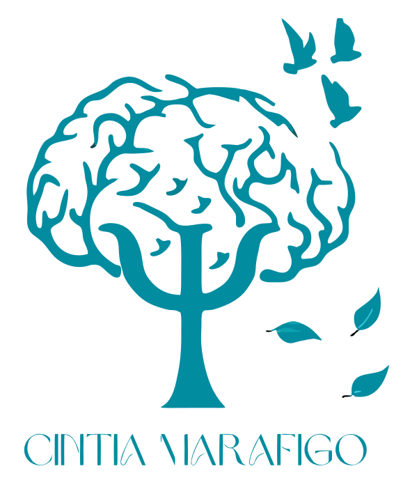
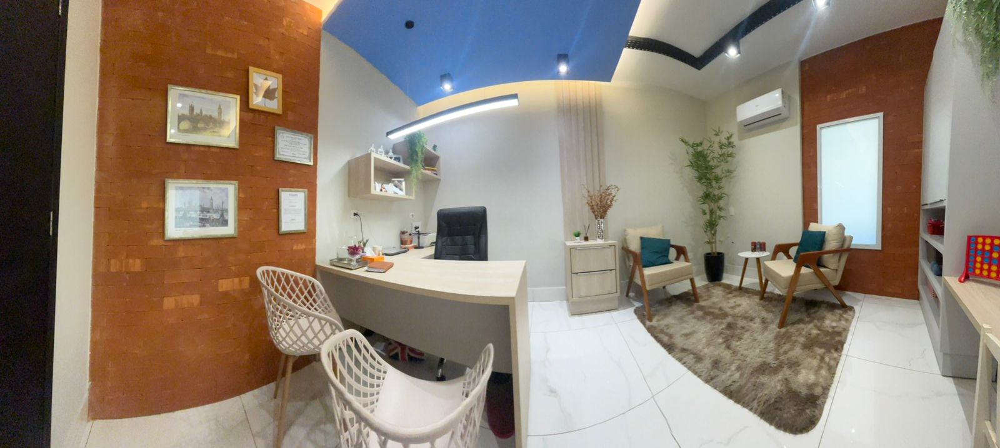
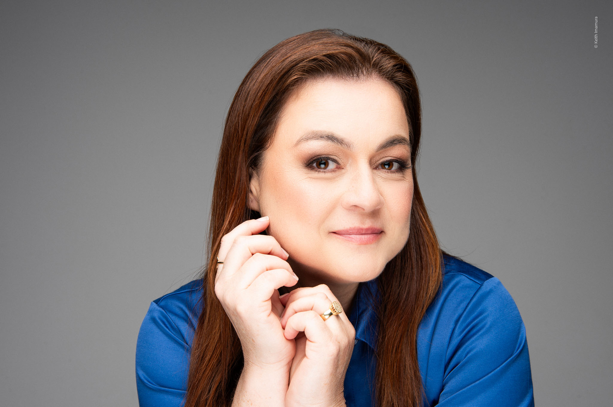

Avaliação e reabilitação neuropsicológica e atendimento clínico voltado ao desenvolvimento da saúde mental.
Duas décadas de dedicação contínua à psicologia e ao desenvolvimento humano estruturado.
Milhares de histórias transformadas, auxiliando na superação de limites e autoconhecimento.

"O autoconhecimento é o princípio estrutural de qualquer mudança real."
Com uma trajetória sólida de mais de 20 anos de experiência, Cintia uniu as bases da psicologia clínica tradicional à precisão da neuropsicologia.
Sua abordagem é estruturada e compassiva, desenhada para adolescentes e adultos que buscam compreender os meandros de seu funcionamento mental, afetivo e cognitivo.
Tendo conduzido mais de 20.000 atendimentos, seu consultório se tornou um ambiente focado em resultados reais, diagnósticos precisos e processos terapêuticos profundamente éticos.
Metodologias suportadas pela neurociência e validadas por décadas de prática clínica.
Investigação detalhada das funções cognitivas, comportamentais e emocionais, buscando identificar diagnósticos complexos como TDAH, Autismo (TEA), declínio cognitivo e outras síndromes neurológicas.
Programa de intervenção estruturado focado em recuperar ou compensar déficits cognitivos identificados, melhorando o desempenho na atenção, memória e funções executivas.
Acolhimento psicológico voltado ao tratamento de ansiedade, depressão e crises vitais, guiando o paciente através do labirinto emocional para a regulação e bem-estar contínuo.
Um caminho estruturado e transparente desde o nosso primeiro contato até o início do seu desenvolvimento.
Agende seu horário via WhatsApp de forma rápida e segura.
Sessão de acolhimento e escuta para entendermos suas demandas.
Direcionamento para Avaliação Neuropsicológica ou Psicoterapia.
Início prático do processo com metas visando sua evolução contínua.
Experiências reais de quem confiou em nosso trabalho para sua jornada de desenvolvimento.
"A Dra Cintia transmite paz, segurança e confiança. Seus encaminhamentos não soam como imposições, verdades únicas, mas me fazem enxergar novas possibilidades. Obrigada Dra., pelo atendimento ❤️"
"Cíntia é uma profissional maravilhosa, muito competente e experiente. Faço terapia com ela já há 5 anos e ela, sempre muito comprometida, tem me auxiliado a compreender e como agir diante das situações mais diversas da vida. Às vezes o olhar dela e uma palavra tira todo o pesar de algo que está nos desconfortando. Excelente psicóloga."
"Excelente profissional, já sou paciente há 5 anos e ela me ajudou de todas as formas a combater a depressão e traumas."
O primeiro passo para a mudança é a decisão de olhar para si com a orientação técnica correta.
Falar pelo WhatsApp